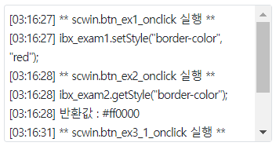
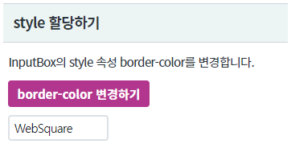
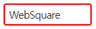
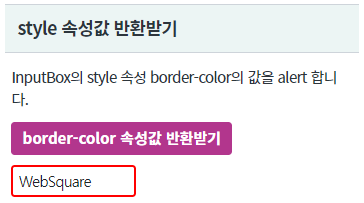
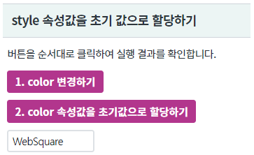
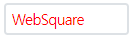
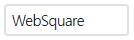
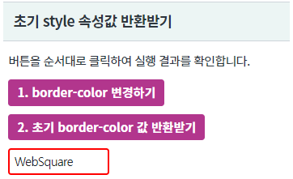

컴포넌트의 style을 스크립트로 변경하는 예제입니다.
아래의 API로 CSS 속성을 제어 할 수 있습니다. - CSS 속성값 설정 : setStyle - CSS 속성값 반환 : getStyle - 초기 CSS 속성값으로 복구 : setInitStyle - 초기 CSS 속성값 반환 : getInitStyle
InputBox의 border-color 변경 하기
InputBox의 border-color 속성값 반환 받기
InputBox의 color 속성값을 복구하기
InputBox의 초기 style 값 반환 받기 - border-color
이 예제는 예제 화면의 영역 [로그 확인]의 textarea와 브라우저 개발자 도구의 콘솔에 실행 스크립트 및 결과 값이 출력됩니다.
그림 1.로그 출력 영역 참고 이미지

[브라우저(Chrome) 실행 예시 - 초기 상태]

input의 테두리가 붉은색으로 변경됩니다.
[브라우저(Chrome) 실행 예시]

[브라우저(Chrome) 실행 예시 - 초기 상태]

#ff0000가 alert됩니다.
[브라우저(Chrome) 실행 예시 - 초기 상태]

input의 문자의 색이 붉은색으로 변경됩니다.
[브라우저(Chrome) 실행 예시]

-
input의 문자의 색이 초기 설정값으로 변경됩니다.
[브라우저(Chrome) 실행 예시]

[브라우저(Chrome) 실행 예시 - 초기 상태]

input의 테두리의 색이 파란색으로 변경됩니다.
[브라우저(Chrome) 실행 예시]
-
red가 alert됩니다.
//id가 ibx_input인 컴포넌트의 예시입니다. //border-color를 #e40a0a로 할당합니다. ibx_input.setStyle("border-color", "#e40a0a");
//id가 ibx_input인 컴포넌트의 예시입니다. var strRet; //inputbox의 border-color style 값 반환받기. strRet = ibx_input.getStyle("border-color");
//id가 ibx_input인 컴포넌트의 예시입니다. //컴포넌트의 초기 스타일로 복구합니다. ibx_input.setInitStyle("border-color");
//id가 ibx_input인 컴포넌트의 예시입니다. var strRet; //inputbox의 초기 border-color style 값 반환받기. strRet = ibx_input.getInitStyle("border-color");
setStyle( propertyName , value )
getStyle( propertyName )
setInitStyle( propertyName )
getInitStyle( propertyName )